Reichen offene Daten für einen fahrbaren Nachbau?
Ausgangsfrage: Lässt sich ein Hochgeschwindigkeits-Prüfgelände aus öffentlichen Geodaten so rekonstruieren, dass es sich im Simulator plausibel fährt, einschließlich der Steilkurven? Geprüft wurden Luftbild und Höhenmodell. Beide liegen vollständig und unverfälscht vor, das Vorhaben ist machbar.
Festgelegt wurde ein Kartenquadrat von 4096 m Kantenlänge bei 1 m Rasterweite. Das Gelände (≈ 2,5 × 1,8 km) liegt mittig, rundherum bleiben mindestens 800 m Randzone, damit der Horizont nicht an einer Kante endet. Der Rest wird in 15 Bauschritte plus Endtest zerlegt, jeder mit eigenem Fahrtest.
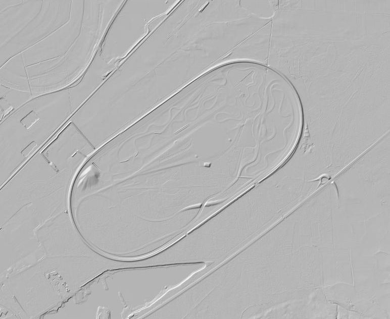
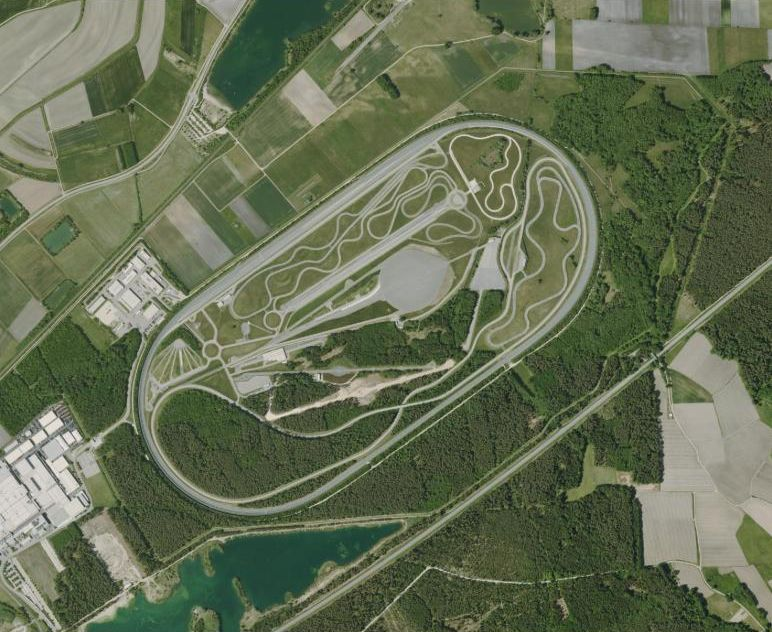
Rohdaten holen, prüfen, verkleinern
Fünf Datenquellen decken das Quadrat vollständig ab. Alle Kacheln wurden auf Vollständigkeit geprüft (Höhe 25/25, Luftbild 25/25, Oberfläche 25/25, Gebäude 9/9). Die Server der Vermessungsverwaltung sind aus der Rechenumgebung nicht direkt erreichbar, der Download läuft deshalb über den Browser.
| Datensatz | Inhalt | Kacheln | Aufbereitung |
|---|---|---|---|
| Digitales Geländemodell | Höhe über NN, 1 m Raster | 25 | unverändert übernommen |
| Luftbild | Orthofoto, 20 cm Pixel | 25 | als JPEG (Qualität 95) von ≈ 62 auf ≈ 10 MB je Kachel, visuell verlustfrei |
| Oberflächenmodell | Höhe inkl. Bäume und Gebäude | 25 | von 20 cm auf 1 m, je Zelle der höchste Wert, damit Baumspitzen bleiben |
| 3D-Gebäudemodell (LoD2) | CityGML, 2-km-Kacheln | 9 | 31 Gebäude im Zaun (Kartendaten: 34) |
| Kartenlinien | Straßen, Kursnamen, Fahrtrichtung (oneway) | 1 | Auszug als Rechteck, mit Metadaten |
Kennwerte
- Gesamtvolumen Rohdaten: ≈ 360 MB
- Höhen im Quadrat: 348,8 bis 423,8 m ü. NN
- Randzone um den Zaun: mindestens 805 m
Laserpunkte geprüft, nicht geladen
Befliegung 2023, ≈ 17 Punkte/m², ≈ 160 MB je km². Für die Steilkurven wären sie genauer als das 1-m-Raster, wurden aber vorerst nicht benötigt (siehe Eintrag 05 ff.: Die Fahrbahn wird ohnehin als eigenes 3D-Modell gebaut).
Das nackte Gelände: Höhenraster, Luftbild, erste Testfahrt
Aus Höhenmodell und Luftbild entsteht eine leere Karte. Das Höhenraster wird als 16-Bit-Graustufenbild abgelegt, damit die Höhe auf Millimeter genau im Simulator ankommt:
z = Höhe über NN − 340 m · Wertebereich 340 bis 440 m auf 65 535 Stufen → Auflösung 1,5 mm. Karte 4096 × 4096 Punkte, Punktabstand 1 m, Nullpunkt in der Geländemitte (x nach Ost, y nach Nord).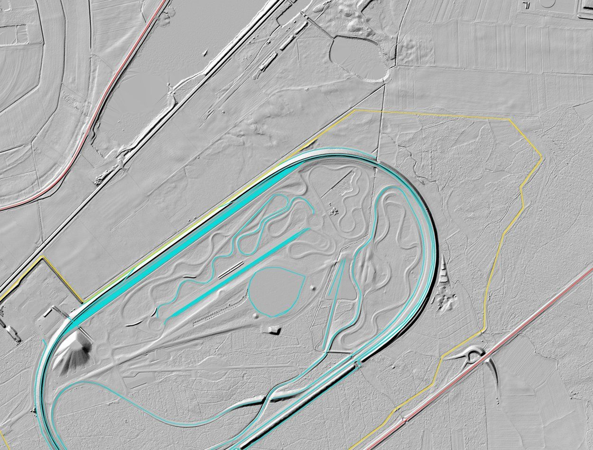
Prüfung vor dem Fahrtest
- 0 Lücken im Höhenraster (Min. 348,85 m, Max. 423,68 m)
- Gelände-Datei weicht vom Höhenmodell um < 1 mm ab (nachgerechnet)
- Level ohne Editor-Handarbeit aus der Simulator-Vorlage erzeugt
Fahrtest-Befund
- Lage und Ausrichtung stimmen, nicht gespiegelt (Steilkurven im Nordosten und Südwesten)
- Steilkurven fahrbar, 60 FPS ohne Einbruch
- Fehlt: die Unterführung unter der Südwest-Kurve. Das Höhenmodell kennt keine Brücken, übrig bleibt nur der Graben. Eingeplant in S05.
Bodenkarte: Asphalt, Beton, Wiese, Wald, Kies
Die Bodenart bestimmt Grip, Geräusch und Optik. Eine reine Farbklassifikation des Luftbilds scheitert an Schatten, deshalb kombiniert die Bodenkarte drei Quellen:
- Luftbild: unbunt und hell = Belag, braun = Erde oder Acker
- Höhe über Grund (Oberflächenmodell minus Gelände): mehr als 3 m und mehr als 300 m² zusammenhängend = Wald
- Kartenlinien: Beton, Kies, Wasser, Gebäude, Straßenkern. Breite aus
width, sonst Spurzahl × 3,5 m (Oval: 14 m)
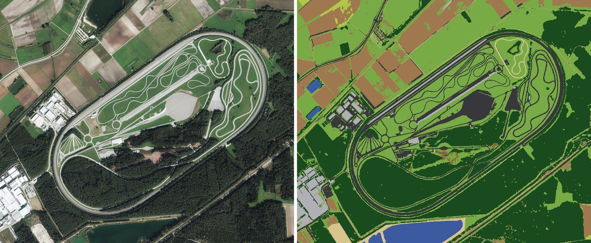
Flächenanteile innerhalb des Zauns
Zusätzlich Feldweg 0,2 %. Gesamte Karte: Wald 38 %, Wiese 29 %, Acker 16 %, Beton 6 % (Gewerbe außerhalb), Asphalt 4,7 %.
Entscheidungen
- 10 Materialien. Neue werden nur hinten angehängt, die Reihenfolge ist an die Gelände-Datei gebunden und darf sich nie ändern.
- Belag im Baumschatten zählt nur direkt an einer Kartenstraße als Asphalt.
- Das Paket sichert vorher den alten Stand, ein Skript setzt ihn auf Wunsch zurück.
Fahrtest-Befund
Asphalt fühlt sich stimmig an, Offroad und Schotter passen, keine fehlenden Texturen, 60 FPS konstant.
Oval, erster Versuch: warum v1 durchfiel
Das 4,6 km lange Oval ist das Herzstück. Es wird nicht mehr als Gelände, sondern als eigene 3D-Fahrbahn modelliert, damit Spuren, Markierungen und die Steilkurven sauber sitzen. Die erste Version wurde ohne Vorab-Prüfung ausgeliefert, und der Fahrtest war eindeutig: Spuren unplausibel, Textur zu grob, Gelände sichtbar durch die Fahrbahn, Unterführung unbrauchbar.
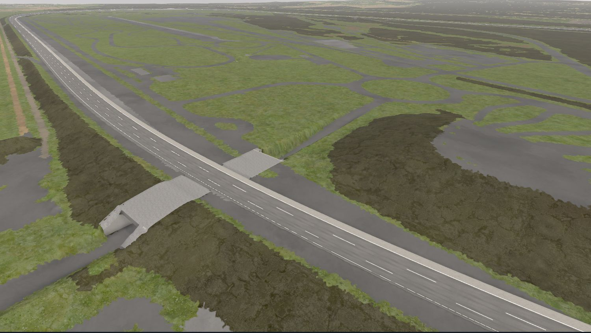
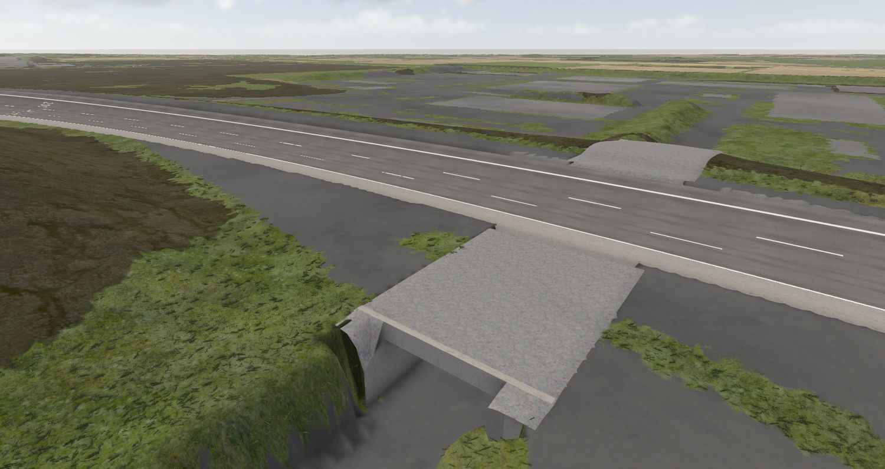
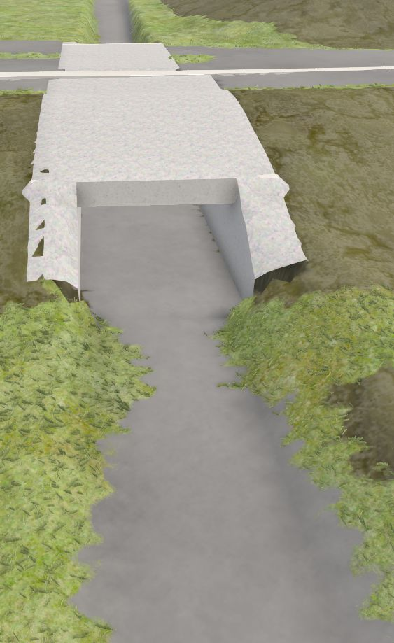
| Befund | Ursache | Maßnahme |
|---|---|---|
| 4 statt 3 Spuren | Kartendaten (lanes=4) sind falsch | Spuren am Luftbild nachgezählt und gemessen (Eintrag 06) |
| Beulen an jeder Einmündung | Fahrbahnrand folgte der Asphaltfläche der Bodenkarte | Feste Spurgeometrie entlang einer gemessenen Mittellinie |
| Gelände sticht durch | Fahrbahn nur 6 cm über dem Gelände | Gelände unter der Fahrbahn absenken |
| Textur zu grob und dunkel | Selbst erzeugte Rauschtextur | Asphalt-Textur aus dem Vorgängerprojekt, aufgehellt |
| Zacken an der Unterführung | Gelände nur bis Wand + 0,5 m ausgespart, Dreiecke bis 1,41 m lang | Siehe Eintrag 08 |
Die Mittellinie aus dem Luftbild ablesen
Die Kartenlinie des Ovals hat nur alle ≈ 70 m einen Stützpunkt und liegt bis zu 10 m neben der Fahrbahn. Auch eine automatische Linienerkennung im Luftbild war unbrauchbar: Schatten und Leitplankenpfosten erzeugen Scheinlinien. Also wurde gemessen wie auf einer Vermessungsskizze:
- Luftbild entlang der Strecke „geradegezogen“: Streifenbilder von 60 × 38 m mit Meter-Skala
- Strichreihen der Fahrbahnmarkierung abgelesen, Mitte zwischen den zwei Reihen = Mittellinie
- Spline durch 32 Messstellen, Ausgabe alle 2 m (2302 Stationen auf 4605,5 m)
- Gegenprobe an 32 weiteren Stellen: Abweichung ≲ 0,5 m
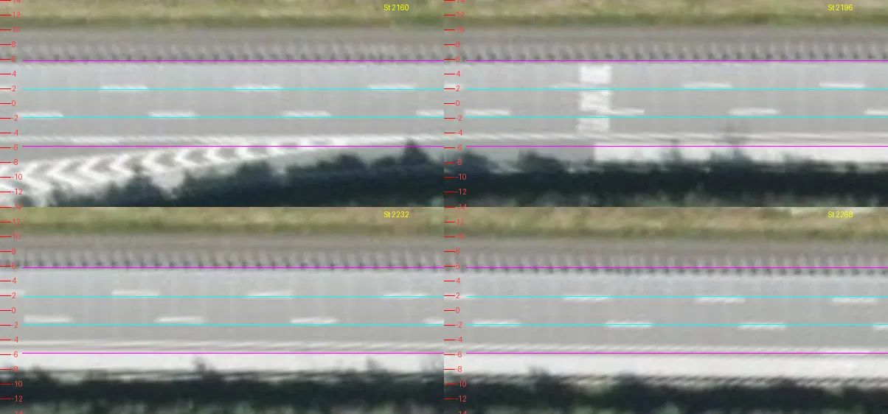
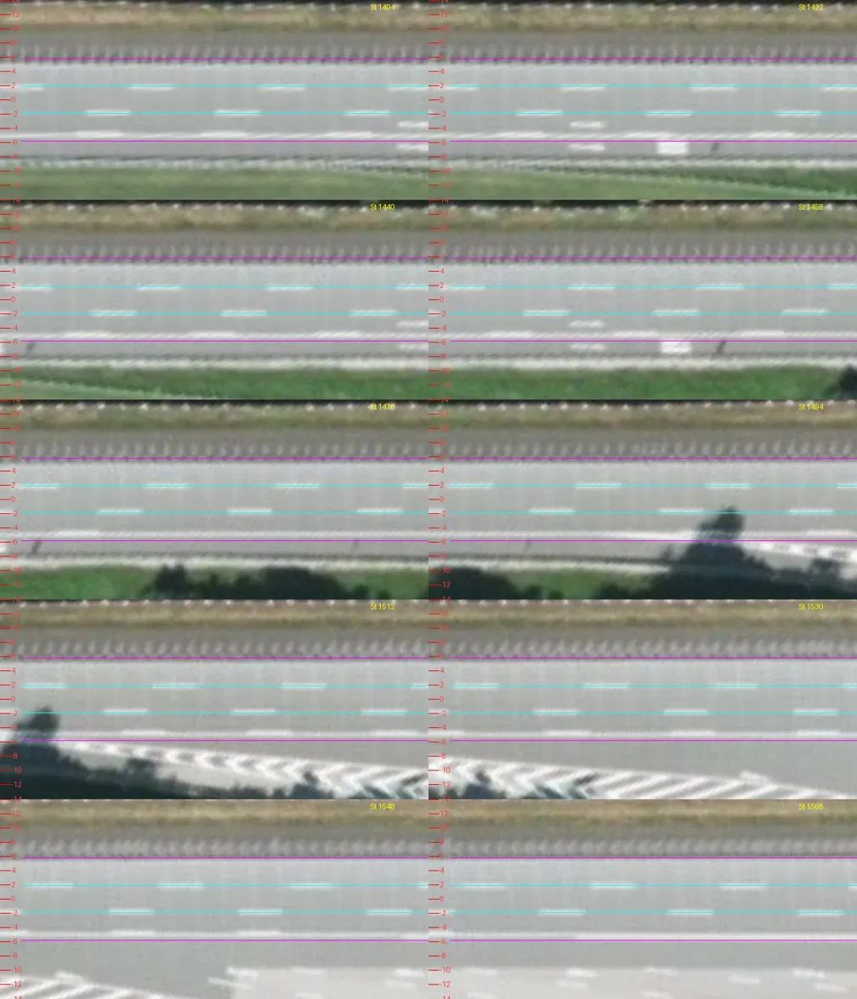
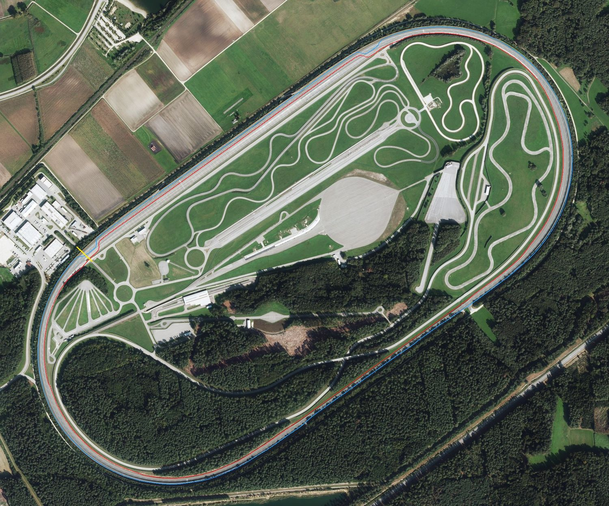
Querschnitt des Ovals (schematisch, Gerade)
Maße aus dem Luftbild gemessen. In der Steilkurve kippt der Querschnitt: Aus dem Höhenmodell ergeben sich an der Spur 200 etwa 39 bis 41°, das Original erreicht laut öffentlicher Projektangabe bis 49°.
Spuren stimmen, jetzt fehlt das Ein- und Ausfahrtsystem
v2 bringt die gemessene Mittellinie, drei Spuren, abgesenktes Gelände, hellere Asphalttextur und die Schrift „200 | 140 | 80“ an acht Stellen. Fahrtest: Die Spuren auf der Geraden passen, die Unterführung ist weiter schlecht, und das System aus Aus- und Auffahrt oberhalb der Unterführung fehlt komplett.
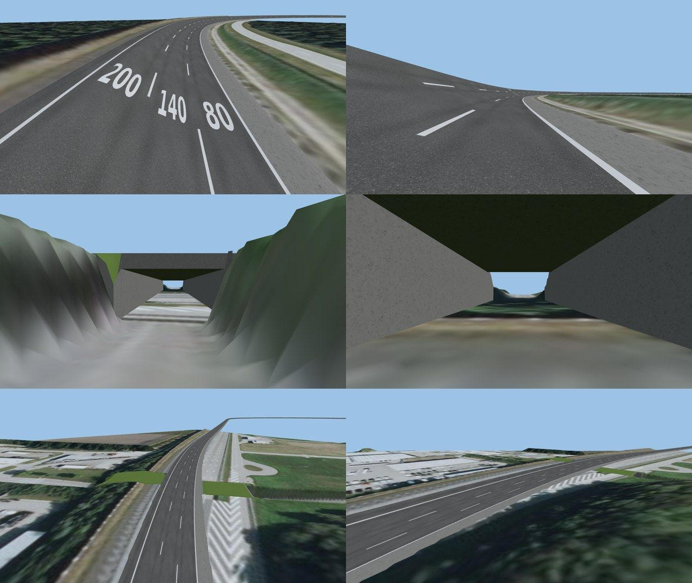
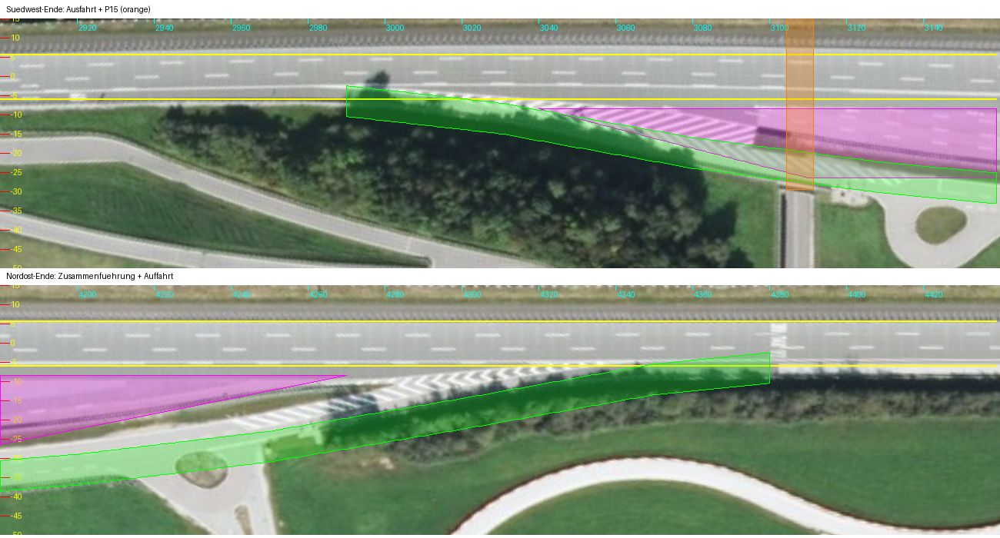
Für v3 wurde das Luftbild nach Station (Meter entlang der Mittellinie) und Querlage (Meter seitlich) entzerrt und die Kartenwege darübergezeichnet. Damit war der „breite Bereich“ in kurzer Zeit verstanden. Er liegt zwischen Station 2950 und 4410 m an der Innenseite:
- 6 Zusatzspuren aus Beton (je 3 m) direkt neben dem Oval
- Grasstreifen, dahinter die Innenstraße (Beton, 8 m, Randlinien)
- Ausfahrt im Südwesten und Auffahrt im Nordosten mit Sperrflächen (Schrägstreifen)
- Die Kartenwege der Zusatzspuren sind nur Zweipunktlinien, die Sehne liegt bis 25 m neben der echten Lage. Maßgeblich ist deshalb das Luftbild.
- Mittellinie nur in diesem Bereich nachgemessen und um bis zu 2,8 m korrigiert, der Rest bleibt unverändert
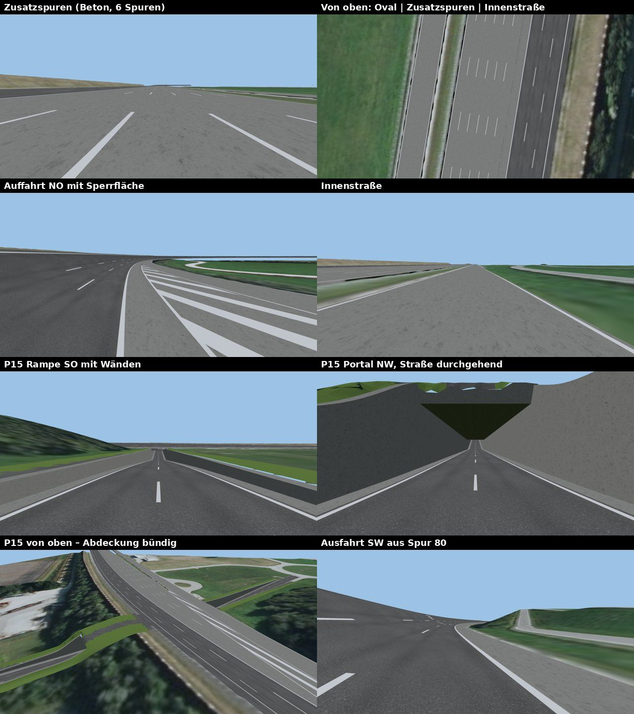
Fahrtest v3: Das Oval an sich passt. Offen sind die Unterführung (glitcht) und die Ränder von Innenstraße und Zusatzspuren (erhöht, schwarz). Beides behandeln die Einträge 08 und 09.
Unterführung in drei Anläufen: Loch statt Absenken
Das Höhenmodell zeigt über dem Tunnel nur den Damm des Ovals. Die Unterführung muss also in das Gelände hineingebaut werden. Daten der Unterführung: 66,3 m lang, lichte Breite 7,8 m, Höhe 4,5 m, zweispurige Straße (6,5 m) mit Rand- und Mittellinie, Tunnelstrecke von Meter 5 bis 65, Wände bis über die Rampen hinaus.
| Rev. | Ansatz | Fahrtest-Befund |
|---|---|---|
| v1 | Einschnitt im Gelände, Wände, Deckel | durchgefallen Zacken durch Wände, Deckel über dem Oval |
| v2 | Breiterer Einschnitt, Portale, Deckel unter dem Oval | durchgefallen keine Straße darunter, Betonplatte sichtbar |
| v3 | Loch im Gelände (Schichtwert 255 = kein Gelände), durchgehende Asphaltstraße, Oval-Fahrbahn bildet selbst die Decke | teilweise Rampenwände mit Zacken, Auto glitcht |
| v4 | Loch seitlich erweitert, Randpunkte abgesenkt, gerade Stirnwände | bestanden Ränder bündig, Unterführung sauber (vorerst) |
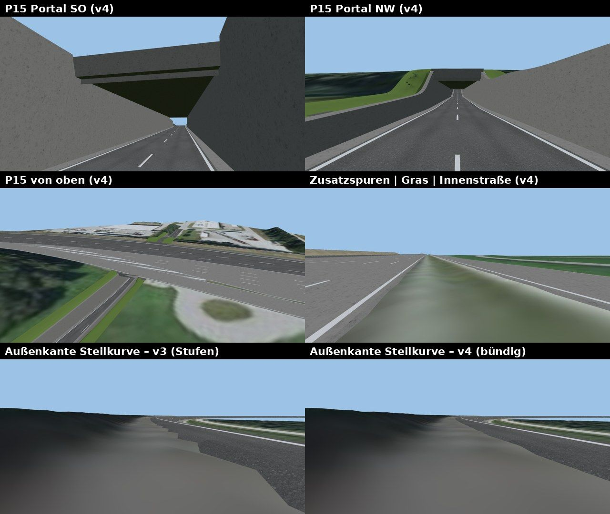
Warum ein Loch besser ist als Absenken
Gelände-Dreiecke sind 1 m groß, bis 1,41 m lang. Wer das Gelände nur bis zur Wand absenkt, hat immer ein Dreieck, das auf der falschen Seite der Wand endet. Ein Loch dagegen schaltet das Gelände samt Kollision ganz ab.
Die Falle am Lochrand
Der Simulator lässt pro Lochpunkt nur das Quadrat nach +x/+y weg. Die Randquadrate werden gezeichnet und hängen an Lochpunkten mit der Original-Höhe (Damm, bis 19 m). Ergebnis in v3: Gelände-Keile durch Wände und Portal. Die alte Vorschau hat das versteckt, weil sie alle Dreiecke mit Lochecke wegließ. Die Vorschau rechnet jetzt wie der Simulator.
Schwarze Ränder und glitchende Fahrbahn
Fahrtest v3: Straßenränder stehen erhöht und erscheinen schwarz, das Auto glitcht beim Überfahren. Zwei getrennte Ursachen, beide in der Geometrie am Rand:
Ursache 1: Graben statt Übergang
Das Gelände war unter jeder Fläche pauschal 30 cm abgesenkt. Weil Geländedreiecke 1 m groß sind, entsteht am Rand ein Graben, die Fläche steht als Kante darüber. Die Schürze (senkrechte Blende) wird sichtbar.
Maßnahme
- Flächenraster mit 0,5 m aus allen befahrbaren Oberflächen (Abstandskarte)
- Innen −30 cm, Randstreifen (1 m) −10 cm, außen 1,5 m bündig auf Rand −5 cm, danach 2 m weich zum Gelände
Ursache 2: Doppelte Schürzen
Die Schürzen der Betonflächen waren beidseitig mit denselben Punkten gebaut. Gegenläufige Dreiecke heben sich auf: Die Flächennormale wird 0, die Fläche erscheint schwarz. Dazu kommen zwei Kollisionsflächen übereinander, daher das Glitchen.
Maßnahme
- Schürzen nur einseitig, Vorderseite nach oben
- Stirnwände der Unterführung als Ausgleichsgerade über Gelände und Fahrbahn statt Punkt für Punkt (sonst Sägezahn), 50 cm dick mit Kappe
| Kennzahlen Oval v4 | Geländeanpassung | ||
|---|---|---|---|
| Modelle | 43 | Punkte unter Flächen | 105 692 |
| Eckpunkte | 146 135 | Punkte im Randstreifen | 9 809 |
| Dreiecke | 201 392 | Punkte in der Schulter | 37 867 |
| Länge der Mittellinie | 4605,5 m | max. Absenkung / Anhebung | 1,55 m / 3,0 m |
Handlingkurse: erst messen, dann bauen
Zwei Kurse, ein Netz aus Zufahrten. Handling I ist ein einziger geschlossener Kurs in Form einer Acht: Eine Überführung kreuzt den eigenen Südast, zwei flache Brücken queren einen Bachdurchlass. Handling 2 ist ein kurviger Kurs mit Betoncurbs und wird nur über die Einfahrt von Handling I erreicht, mitten auf der Strecke.
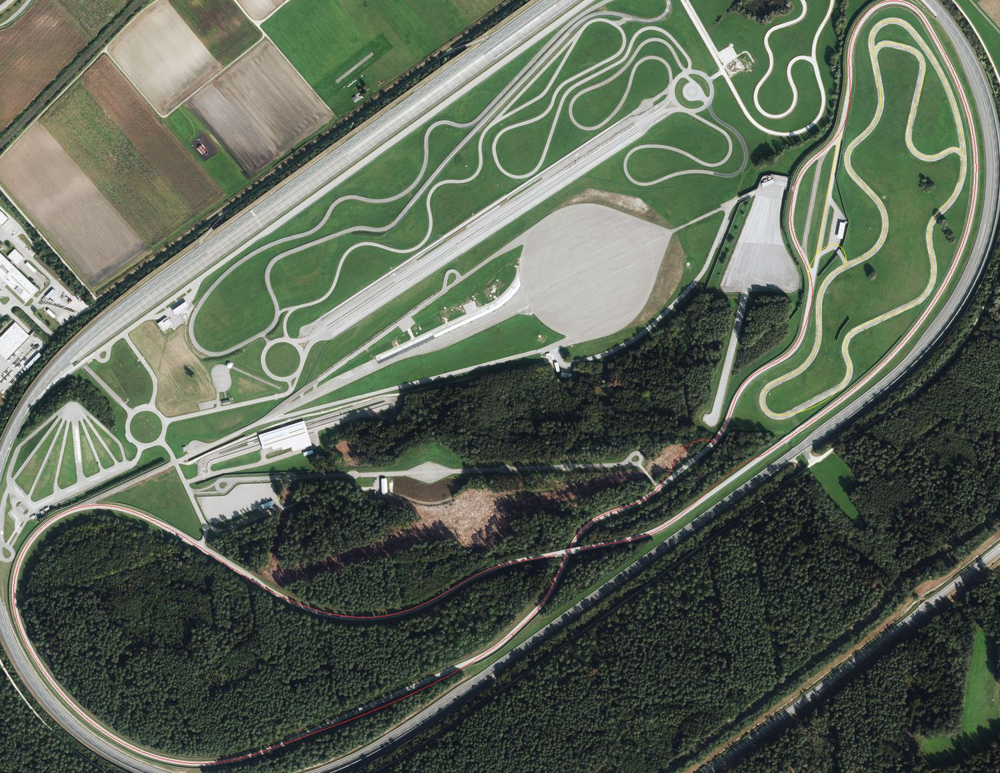
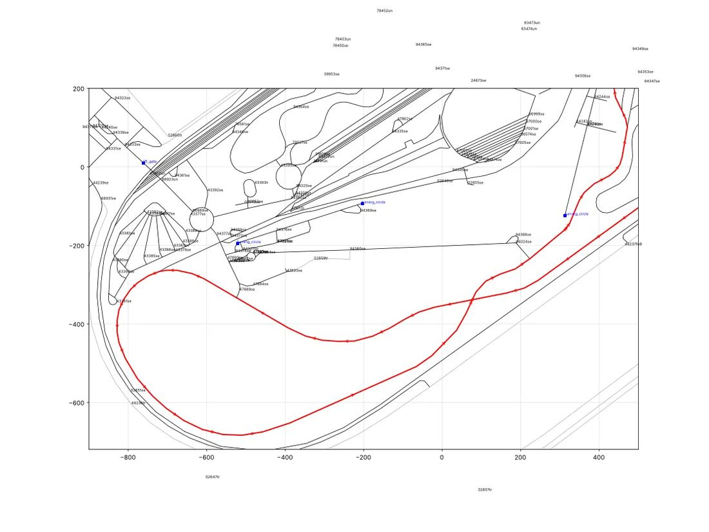
| Befund v1 (Fahrtest) | Ursache | Maßnahme in v2 |
|---|---|---|
| Brücken und Ein-/Ausfahrten fehlen komplett | Die Überführung ist in den Kartendaten nicht „Handling I“ benannt und wurde übersehen. Die Bachdurchlässe wurden mit den gemeinten Brücken verwechselt. | Netz über gemeinsame Knoten durchsucht, Handling I als ein Linienzug mit Brücken als Streckenbereichen gebaut |
| Graue Asphaltstreifen neben der Fahrbahn | Lage und Breite aus der Kartenlinie geschätzt, bis 3,75 m daneben. Die Bodenkarte (S04) färbt den echten Belag grau. | Lage und Breite aus dem Luftbild gemessen; angrenzendes Gelände bis 3 m und kleine Asphaltflecken bis 25 m auf Wiese oder Wald umgesetzt |
| Überführung höhengleich gekreuzt | Kein Brückenbauwerk modelliert | Deck zwischen den Dammkronen, 1,2 m stark, Widerlager, ≈ 4,3 m lichte Höhe darunter |
| Einmündung als überlappendes Band | Zwei Flächen übereinander | Ecken ausgerundet (R 6 bis 10 m), Randlinie der Hauptstraße unterbrochen, Nebenstraße 2 cm tiefer angeschlossen |
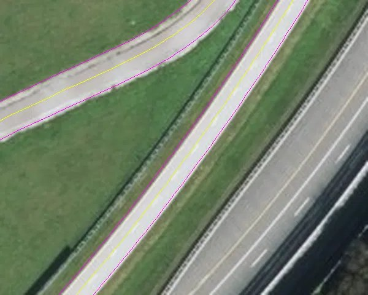
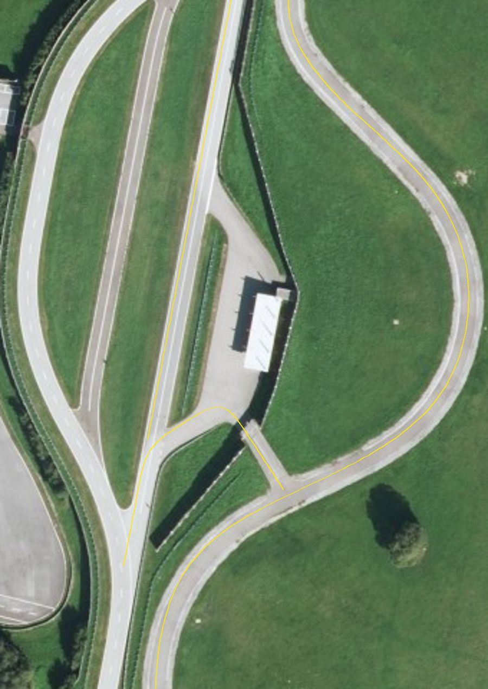
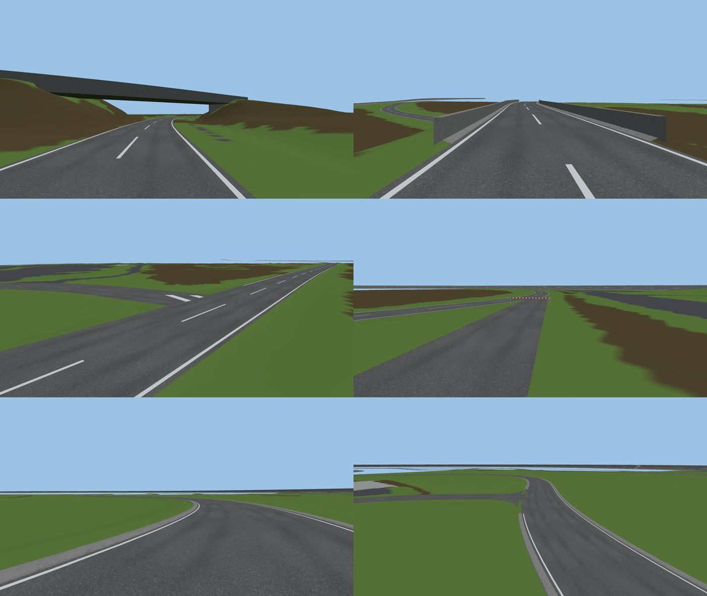
Gemessene Maße
- Handling I: 7,0 m breit, max. Steigung 3,8 %
- Handling 2: 9,25 m gesamt = 8,25 m Asphalt + 2 × 0,5 m Betoncurb (8 cm hoch)
- Ein-/Ausfahrt: 6,5 m, Zufahrt zu Handling 2: 6 m, Behelfsauffahrt: 5 m
- Überführung: Deck 1,2 m, Brüstung 0,9 m; Bachbrücken: Körper 0,8 m, Brüstung 0,7 m
Fahrtest v2 und offene Punkte
- Überführung, Brücken, Curbs, Einmündungen und Wegfall der Streifen: bestanden
- Nacharbeit später: Sperrfläche an der Ein-/Ausfahrt, Lage der Schranken, Zufahrt auf Handling 2, kleine Kanten an Einmündungen
- Bewusst noch nicht gebaut: Leitplanken (S13), das Nasshalte-System von Handling 2
Kennzahlen v2: 80 Modelle, 71 839 Eckpunkte, 83 389 Dreiecke.
Was sechs Revisionen gelehrt haben
Die Fehler wiederholen sich in Mustern. Aus ihnen sind feste Arbeitsregeln geworden:
Regeln
- Messen statt schätzen. Lage und Breite immer aus dem Luftbild, nie aus Kartenlinien.
- Vorab prüfen. Keine Auslieferung ohne 3D-Vorschau, die das Verhalten des Simulators nachbildet (Löcher, Flächennormalen, Materialfarben).
- Rückweg sichern. Jedes Paket sichert den Vorzustand und bringt ein Zurücksetz-Skript mit.
- Reihenfolge einfrieren. Materialliste nur anhängen.
- Befund protokollieren. Je Revision: Symptom, Ursache, Maßnahme.
Typische Fehlerklassen
- Geometrie am Rand: Graben, Kante, Zacken, Loch (Einträge 08, 09)
- Daten ungenau: Kartenlinien zu grob oder falsch (Einträge 05, 06, 10)
- Objekt übersehen: Bauwerk unter anderem Namen geführt (Eintrag 10)
- Fläche doppelt: Normale 0, doppelte Kollision (Eintrag 09)
| Schritt | Rev. | Datum | Ergebnis Fahrtest | Anlass der Folgerevision |
|---|---|---|---|---|
| S03 Gelände | v1 | 30.10. | bestanden | Unterführung fehlt (kommt in S05) |
| S04 Böden | v1 | 30.10. | bestanden | – |
| S05 Oval | v1 | 30.10. | durchgefallen | Spuren, Textur, Durchstechen, Unterführung |
| v2 | 31.10. | teilweise | Unterführung ohne Straße, Ein-/Ausfahrtssystem fehlt | |
| v3 | 31.10. | teilweise | Unterführung glitcht, Ränder erhöht und schwarz | |
| v4 | 01.11. | bestanden | – | |
| S06 Handling | v1 | 01.11. | durchgefallen | Brücken und Einfahrten fehlen, graue Streifen, Einmündung überlappt |
| v2 | 01.11. | bestanden | Nacharbeit später (Details siehe Eintrag 10) | |
| S07 Innenkurse | v1 | 01.11. | durchgefallen | Beton zu hell, Kanten wellig, Markierungen fehlen, Barrieren im Kies-Kurs (Eintrag 12) |
| v2 | 01.11. | in Prüfung | 3D-Vorschau ohne Befund, Fahrtest steht aus |
Innenkurse: vier Bereiche, zwei Revisionen an einem Tag
S07 umfasst die Flächen innerhalb des Ovals: A Kies-Kurs mit rot-weißen Barken und Kies-Platz, B Kreisverkehr mit Kies-Innenfläche, C Multifunktionsfläche (Dreieck mit Gerade nach Süden) und D Fächer mit Kreisverkehr und einer Fliesen-Spur (52 × 5 m, vorerst normale Haftung, Nässe später). Die Flächen wurden aus dem Luftbild abgeleitet: befestigt = unbunt und hell, innerhalb vorgegebener Pufferzonen.
v1: schnell gebaut, schnell durchgefallen
- A Kies-Kurs als Gelände (9 700 m²) mit 605 Schlaglöchern (Radius 0,7 bis 1,7 m, 7 bis 25 cm tief) und 215 Buckeln (bis 15 cm), dazu ein neues Bodenmaterial für groben Kies (Index 10, an die Liste angehängt).
- 2 656 Barken mit fester Kollision entlang des Kurses.
- B, C, D als 3D-Modelle aus hellem Beton mit Randlinien. Gesamt 60 Modelle, 89 500 Eckpunkte, 76 700 Dreiecke.
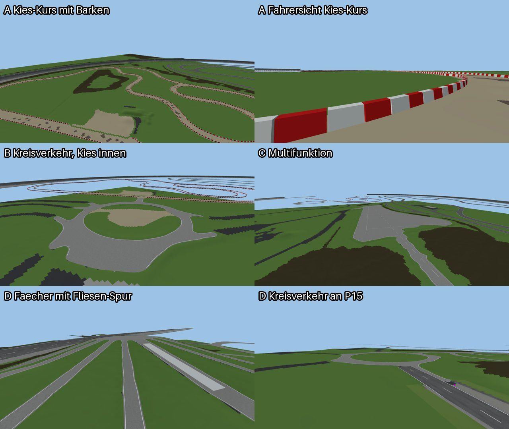
| Befund v1 (Fahrtest) | Ursache | Maßnahme in v2 |
|---|---|---|
| Beton viel zu hell, fast weiß | Flächen mit heller Standardtextur, ohne Bezug zum Luftbild | Eigene Textur für alten, hellen Asphalt (Mittel ≈ 150 von 255), leichte Sprenkelung, feine Risse; Fahrzeug erhält etwas schlechteren Grip |
| Wellige Ränder, eckige Kreisverkehre | Ränder folgten der pixeligen Flächenmaske | Exakte Streifen, Fächerspuren 4 bis 4,75 m, Fliesen-Spur 10 m; Kreisverkehre als echte Kreisringe (B: R 28,9 / 35,3 m, D: R 27,0 / 34,0 m) |
| Markierungen fast nicht vorhanden | Nur einfache Randlinien erzeugt | Linien aus dem Luftbild gelesen: C 128 Linien (1,4 km), D 286 Linien (1,6 km), Breiten 15 / 25 / 40 cm |
| Barrieren auf dem Kies-Kurs | Barken als Wände modelliert, Kollision unerwünscht | Barken entfernt, eigener Schritt S07b: Modelle neu bauen oder Objekte des Simulators nutzen |
| Dunkle Asphaltflecken auf Grasinseln | Bodenkarte färbt kleine Flächen grau | Flecken in den Innenflächen auf Wiese umgesetzt |
v2: Textur, Geometrie, Markierung
Die Asphalttextur (8-m-Kachel) wird aus der Körnung des Simulator-Asphalts erzeugt und aufgehellt, ohne fremde Bilder. Die Markierungen sind nur so gut wie das Luftbild: Wo Schatten liegen, entstehen Lücken. Der Kies-Kurs bleibt Gelände, damit Physik und Staub vom Simulator kommen; das 1-m-Raster macht die Schlaglöcher leicht eckig. Gesamt: 35 Modelle, 35 900 Eckpunkte, 48 200 Dreiecke.
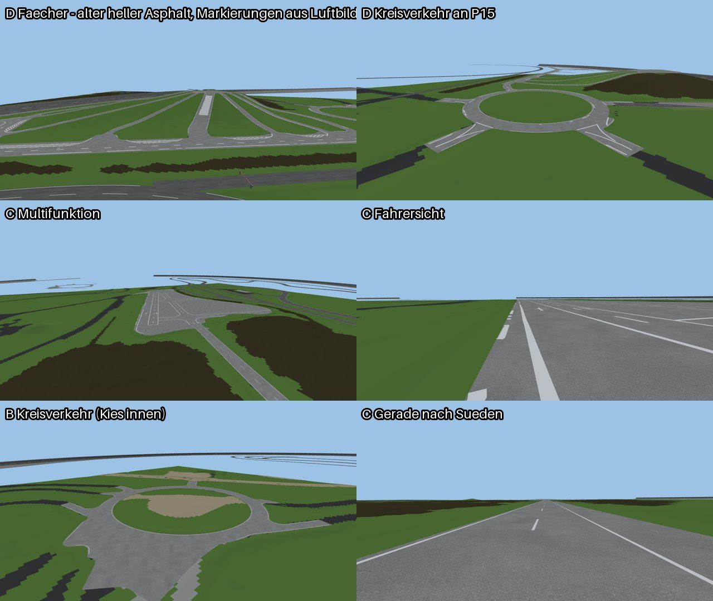
Stand
- 3D-Vorschau v2 ohne Befund
- Fahrtest v2: offen
- Folgeschritt S07b: Barken als Objekte
Gelernt
- Texturen aus dem Simulator-Material ableiten statt Fremdbilder
- Markierungen: Qualität des Luftbilds begrenzt das Ergebnis
- Kreise rechnen statt Masken nachzeichnen